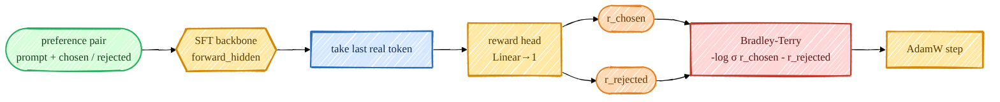

Stage 3 — Reward Model¶
To do classic RLHF (PPO) we need something that scores a response with a single number: higher = more preferred. That's the reward model. I build it by putting a tiny scalar head on top of the SFT backbone and training it on human preference pairs with the Bradley-Terry loss — the same recipe as InstructGPT.

Mermaid source (live, editable)
flowchart LR
P([preference pair<br/>prompt + chosen / rejected]):::data --> BB{{SFT backbone<br/>forward_hidden}}:::model
BB --> LT[take last real token]:::proc
LT --> RH[reward head<br/>Linear→1]:::model
RH --> RC([r_chosen]):::rl
RH --> RR([r_rejected]):::rl
RC --> BT[Bradley-Terry<br/>-log σ r_chosen - r_rejected]:::loss
RR --> BT
BT --> UPD[AdamW step]:::model
classDef data fill:#d6ffd9,stroke:#27ae60,stroke-width:2px,color:#143d1a;
classDef proc fill:#d6e8ff,stroke:#2c6fbb,stroke-width:2px,color:#0d2c52;
classDef model fill:#ffe8a3,stroke:#d48806,stroke-width:2px,color:#5a3d00;
classDef rl fill:#ffd9b3,stroke:#e67e22,stroke-width:2px,color:#6b3500;
classDef loss fill:#ffd6d6,stroke:#c0392b,stroke-width:2px,color:#5c1212;The model: a scalar head on the backbone¶
RewardModel wraps a Transformer, drops the lm_head,
and reads the reward off the last real token's hidden state (the InstructGPT convention). Because
attention is causal, that last token has seen the whole sequence and never attends to the right-padding
after it — so we need no attention mask:
class RewardModel(nn.Module):
def __init__(self, transformer):
self.transformer = transformer
self.reward_head = nn.Linear(transformer.lm_head.in_features, 1, bias=False)
def forward(self, idx, seq_lengths=None):
rewards = self.reward_head(self.transformer.forward_hidden(idx)).squeeze(-1) # (B, T)
return gather_last(rewards, seq_lengths) # reward at the last real token -> (B,)
gather_last just indexes rewards[i, seq_lengths[i]-1].
The objective: Bradley-Terry¶
bradley_terry_loss pushes the chosen reward above the
rejected one. That's the entire training signal:
def bradley_terry_loss(chosen_rewards, rejected_rewards):
return -F.logsigmoid(chosen_rewards - rejected_rewards).mean()
preference_accuracy — the fraction of pairs where
r_chosen > r_rejected — is the metric I actually watch.
The trainer¶
train_reward.py initializes the backbone from sft.pt, then for each
batch runs the chosen and rejected sequences through the model in a single forward (concatenated to
2B), splits the rewards, and applies the loss:
ids = torch.cat([batch["chosen_ids"], batch["rejected_ids"]], dim=0)
lens = torch.cat([batch["chosen_len"], batch["rejected_len"]], dim=0)
rewards = rm(ids, seq_lengths=lens).float()
chosen_r, rejected_r = rewards[:B], rewards[B:]
loss = bradley_terry_loss(chosen_r, rejected_r)
Pairs come from get_preference_iterator, which right-pads each
batch (safe under causal attention) and tracks the true length of each side.
Run it¶
PYTHONPATH=. python scripts/train_reward.py
PYTHONPATH=. torchrun --standalone --nproc_per_node=2 scripts/train_reward.py
# tune: --lr 1e-5 --max_len 768
What the numbers mean¶
- loss — Bradley-Terry; starts at
-log σ(0) = 0.693(chance) and drops as the gap widens. - train_acc / test_acc — preference accuracy. On clean fixtures it goes to
1.0; on real, noisy HH-RLHF / UltraFeedback expect roughly 0.65–0.75 — that's normal, human preferences are noisy. - margin — mean
r_chosen − r_rejected; a useful "is it still separating them" signal.
Saved to /ephemeral/ckpts/reward.pt; PPO loads it with
load_reward_model when --reward_source rm.
➡️ Next: Stage 5 — PPO (which consumes this), or the RM-free path: DPO.